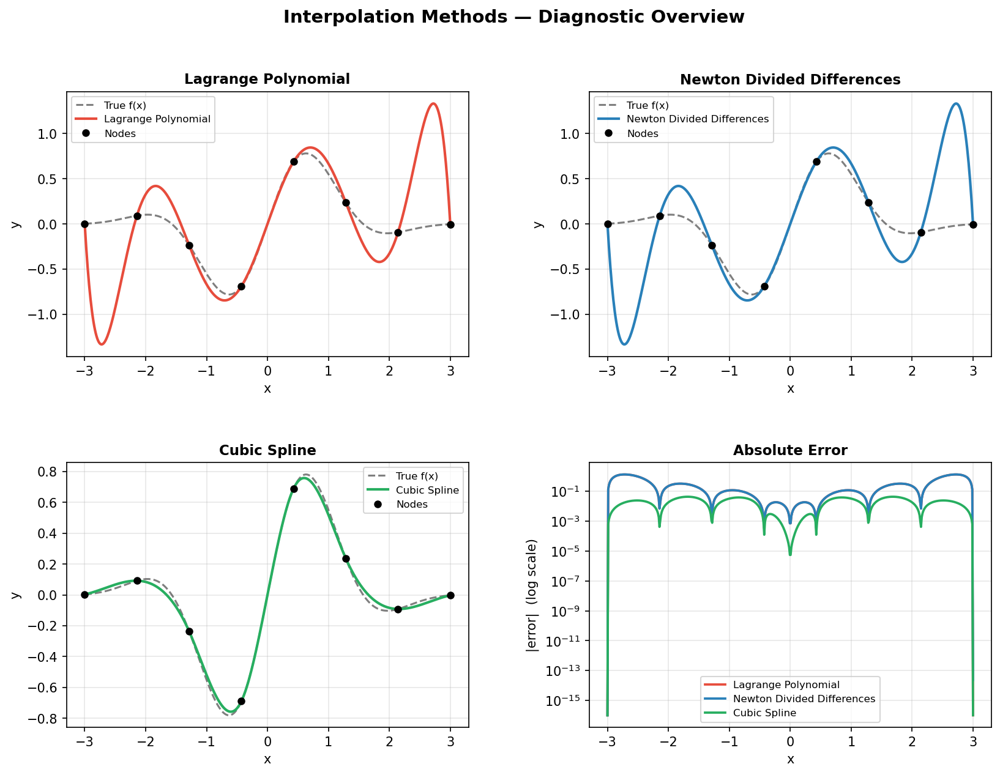
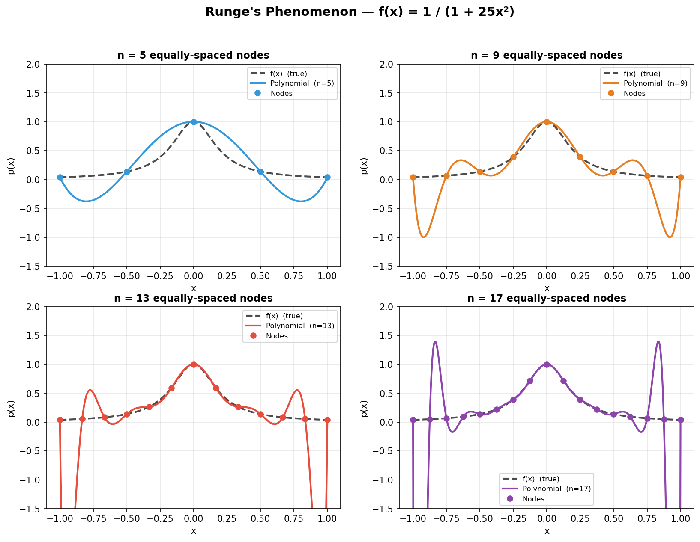
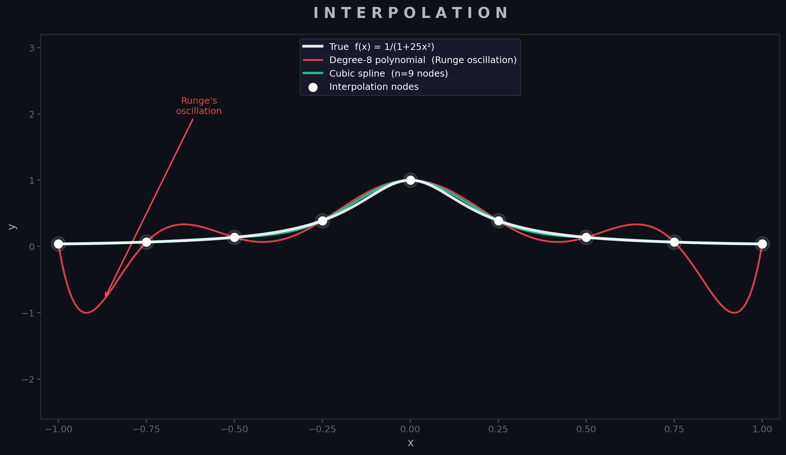

Interpolation
Given a set of $n+1$ data points $(x_0, y_0), \ldots, (x_n, y_n)$, interpolation asks for a function $p(x)$ that passes exactly through every point. This arises constantly in practice: reconstructing a continuous signal from discrete sensor readings, evaluating a look-up table at an arbitrary query point, or building a smooth curve through experimentally measured data. The key design question is what class of function to use.
1.1 Lagrange Polynomial Interpolation
The most conceptually direct approach is to construct a single polynomial of degree $n$ that passes through all $n+1$ nodes. The Lagrange form achieves this by writing the interpolant as a linear combination of specially designed basis polynomials $L_i(x)$, each of which equals 1 at its own node and 0 at every other node:
This form is elegant but computationally expensive: evaluating $p(x)$ at a single point requires $O(n^2)$ multiplications, and adding a new data point forces a complete recomputation of all $n+1$ basis polynomials. For these reasons, Lagrange interpolation is mostly used as a theoretical tool rather than in production code.
1.2 Newton's Divided Differences
Newton's form represents the same polynomial more efficiently using a triangular table of divided differences:
where the divided-difference coefficients are computed recursively:
The crucial practical advantage is incrementality: if a new data point $(x_{n+1}, y_{n+1})$ arrives, only one new column of the triangular table needs to be computed. Once the coefficient table is built in $O(n^2)$, evaluation at any $x$ via Horner's method costs only $O(n)$. Both the Lagrange and Newton forms produce identical polynomials — they are simply two representations of the unique degree-$n$ interpolant through $n+1$ points.
The figure below (produced by interpolation.py) demonstrates all three methods on the smooth test function $f(x) = \sin(2x)\,e^{-x^2/2}$ using 8 equally-spaced nodes, with a per-method absolute error panel in the lower right.

1.3 Runge's Phenomenon
A critical limitation of high-degree polynomial interpolation is Runge's phenomenon: even when the underlying function is perfectly smooth, the interpolating polynomial can develop large oscillations near the endpoints of the interval when nodes are equally spaced. The classic demonstration uses Runge's function:
This function is infinitely differentiable, yet the polynomial interpolant diverges as $n$ increases. The root cause is that the Lebesgue constant — which measures how much the interpolation scheme amplifies errors — grows exponentially with $n$ for equally-spaced nodes.

Two remedies exist: (1) use Chebyshev nodes $x_k = \cos\!\left(\tfrac{(2k+1)\pi}{2(n+1)}\right)$, which cluster near the endpoints and suppress oscillation, achieving near-optimal polynomial interpolation for analytic functions; or (2) switch to piecewise interpolation.
1.4 Cubic Spline Interpolation
Rather than fitting a single polynomial of degree $n$, a cubic spline fits a separate cubic polynomial on each sub-interval $[x_i, x_{i+1}]$, then enforces that the pieces join smoothly — with matching values, first derivatives, and second derivatives at every interior node. This gives a piecewise function $S(x)$ that is globally $C^2$-smooth:
The smoothness conditions yield a tridiagonal linear system of size $(n-1) \times (n-1)$, which is solved in $O(n)$ by the Thomas algorithm. The natural spline boundary condition sets $S''(x_0) = S''(x_n) = 0$; other choices include clamped (prescribed endpoint slopes) and not-a-knot (used by MATLAB's spline function).
Cubic splines converge at $O(h^4)$ for smooth functions and are completely immune to Runge's phenomenon. They are the default choice for smooth interpolation in production code.

1.5 Implementation & When to Use
CubicSpline for almost all interpolation tasks. It is robust, fast, and avoids every pitfall discussed above. Reach for polynomial interpolation only when you have very few points (<6) or need the incremental update property of Newton's form.
Smooth continuous interpolation (the default case)
from scipy.interpolate import CubicSpline
import numpy as np
x_nodes = np.linspace(0, 2 * np.pi, 8)
y_nodes = np.sin(x_nodes)
cs = CubicSpline(x_nodes, y_nodes) # build once
x_query = np.linspace(0, 2 * np.pi, 500)
y_interp = cs(x_query) # evaluate anywhere
# Derivatives are available directly
dy = cs(x_query, 1) # first derivative
d2y = cs(x_query, 2) # second derivativeIncremental updates (Newton's divided differences)
# Use when data arrives sequentially and you need to add nodes cheaply.
# numpy.polynomial.polynomial is a cleaner interface for production use;
# the manual divided-difference table in interpolation.py shows the mechanics.
from numpy.polynomial.polynomial import Polynomial
# For most real tasks, scipy.interpolate.BarycentricInterpolator gives
# the same result as Lagrange/Newton with stable numerics:
from scipy.interpolate import BarycentricInterpolator
bi = BarycentricInterpolator(x_nodes, y_nodes)
print(bi([1.0, 1.5, 2.0])) # query at multiple pointsChoosing a method
| Situation | Recommended method |
|---|---|
| Smooth data, moderate $n$ (most cases) | scipy.interpolate.CubicSpline |
| Very few points (<6), one-off evaluation | Lagrange / BarycentricInterpolator |
| Data arriving incrementally | Newton divided differences |
| High-accuracy, analytic function, arbitrary precision | Chebyshev nodes + polynomial |
| Non-smooth / noisy data | Least-squares fit or scipy.interpolate.UnivariateSpline |